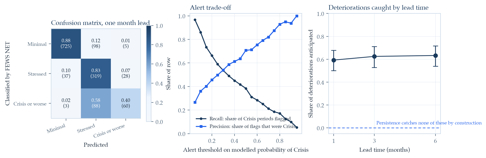
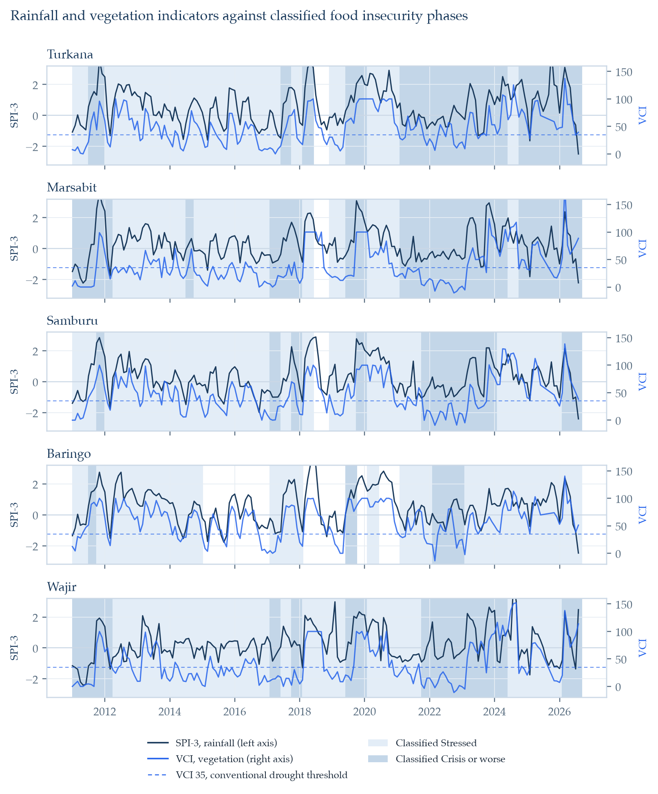
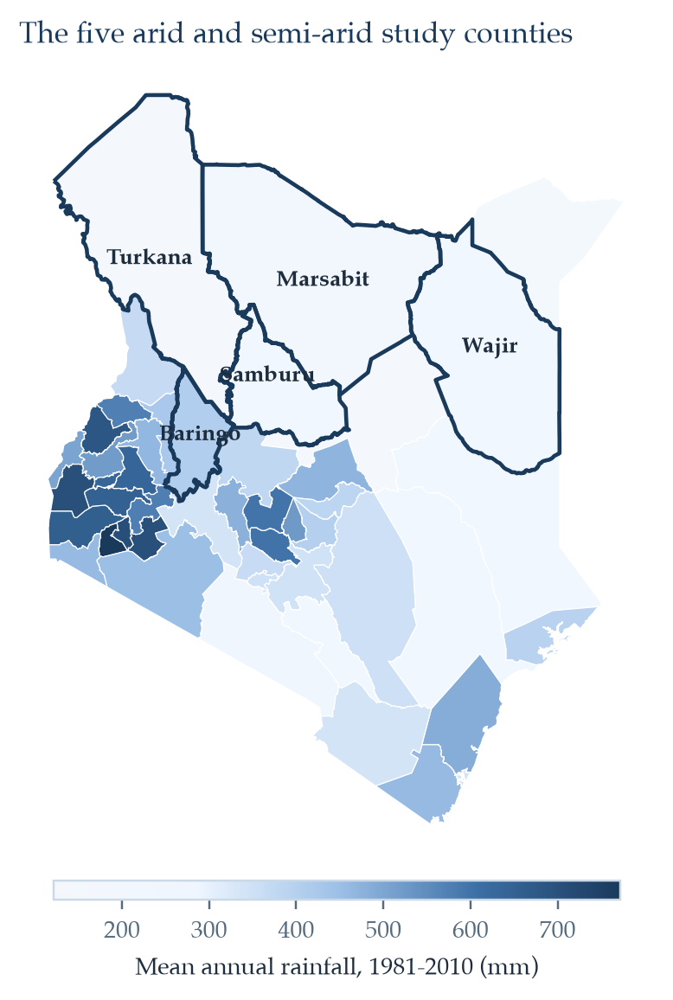
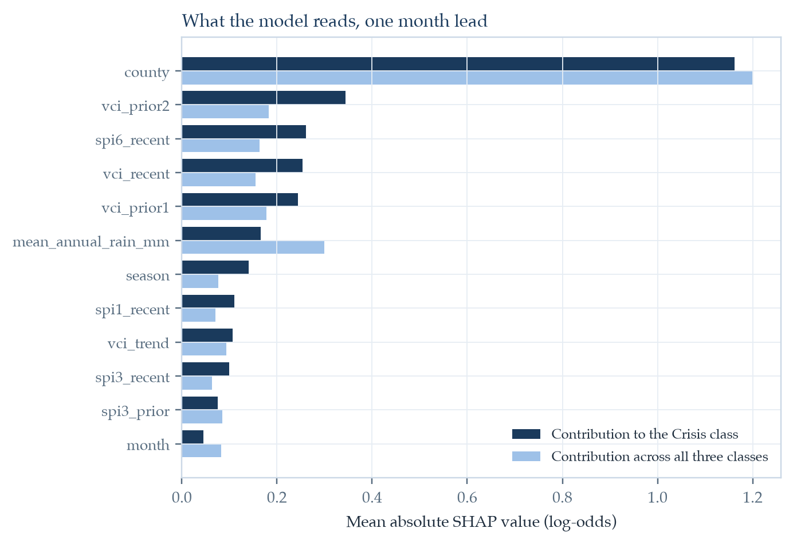
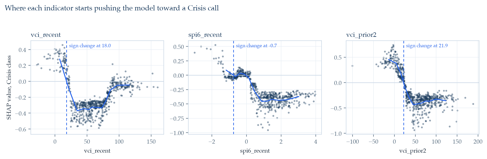
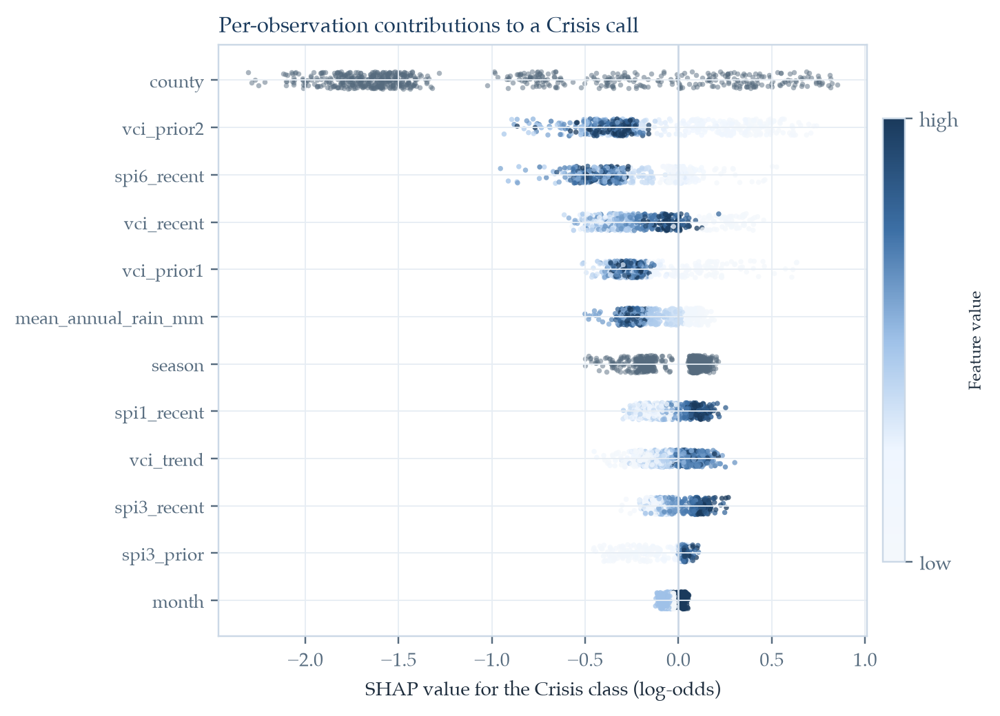

DECISIONS.md. This is independent research and
is not produced, reviewed, commissioned, or endorsed by FEWS NET, NDMA,
the Kenya Space Agency, or the European Space Agency.
Key finding: A model using only satellite rainfall and vegetation data does not beat persistence, which simply repeats each county's previous published classification (accuracy 0.810 against 0.850). The comparison inverts on the 205 county-periods where the classification actually moved, where persistence is wrong by construction: the satellite model assigns the correct class in 58.5% of them and anticipates the direction of 59.3% of deteriorations at one month of lead, rising to 63.3% at six months. Feeding the previous classification back into the model raises accuracy to 0.824 and cuts deterioration detection to 41.6%.
Food security classifications for Kenya's arid and semi-arid counties are published roughly three times a year and rest on field assessment. Satellite rainfall and vegetation data, by contrast, arrive continuously and at no cost to the user. This paper measures how much of the published classification those satellite indicators can actually anticipate. Monthly rainfall from CHIRPS (1981 to 2026) and 16-day vegetation indices from MODIS (2001 to 2026) are reduced to county means for all 47 Kenyan counties, converted into a gamma-fitted Standardized Precipitation Index and a Kogan Vegetation Condition Index, and matched against 2,350 county-period acute food insecurity classifications published by FEWS NET between 2011 and 2026. An XGBoost classifier using only Earth observation features, evaluated by expanding-window walk-forward validation across 1,363 out-of-sample county-periods, separates Minimal, Stressed, and Crisis-or-worse classifications with an accuracy of 0.810 and a macro-averaged AUROC of 0.913, against 0.607 for a majority-class rule. A SHAP analysis identifies vegetation condition lagged two months and the six-month rainfall index as the leading time-varying drivers, and places the Crisis decision boundary near a VCI of 18, inside the severe vegetation deficit band that Kenya's National Drought Management Authority already uses operationally.
| Model | Accuracy | Macro F1 | AUROC | Deteriorations caught |
|---|---|---|---|---|
| Majority class | 0.607 | 0.252 | n/a | 0% |
| Persistence (previous bulletin) | 0.850 | 0.769 | n/a | 0% |
| Satellite only, 1 month lead | 0.810 | 0.707 | 0.913 | 59.3% |
| Satellite only, 6 month lead | 0.809 | 0.716 | 0.912 | 63.3% |
| Satellite plus previous bulletin | 0.824 | 0.710 | 0.933 | 41.6% |
| Satellite without county identity | 0.775 | 0.664 | 0.896 | 54.0% |
Pooled expanding-window walk-forward validation, 2016 to 2026, 1,363 out-of-sample county-periods, of which 205 record a change in classification and 113 a deterioration. Persistence is correct on every stable period and, by construction, on none of the changes.






| Source | Variable | Resolution | Coverage used |
|---|---|---|---|
| CHIRPS v2.0 | Monthly rainfall | 0.05 degree | 1981-01 to 2026-08 |
| MOD13Q1 and MYD13Q1 v6.1 | NDVI | 250 m, 16-day | 2001-01 to 2026-08 |
| FEWS NET classifications | IPC-compatible phase | Sub-county units | 2011-01 to 2026-06 |
| HDX Kenya COD-AB | County boundaries | 47 counties | Current |
CHIRPS is in the public domain, with rights waived by its producer. NASA places no restriction on the subsequent use, sale, or redistribution of MODIS data. FEWS NET distributes the classification records used here under a public data usage policy. None of the four required an account, a key, or an approval process.
@misc{ouma2026eodrought,
title = {Satellite-Derived Drought Indicators as Early
Predictors of Food Insecurity Risk in Northern
{Kenya's} Arid and Semi-Arid Lands},
author = {Ouma, Craig Carlos},
year = {2026},
month = {September},
note = {Preprint},
url = {https://craigouma.github.io/eo-drought-food-security-kenya/}
}